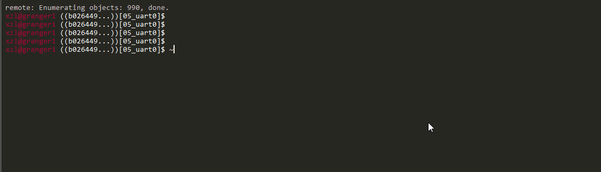

0: Sharpen your tools
READING TIME: 30 MIN
Get the code:
git clone https://github.com/fxlin/p1-kernel
Terms
- rpi3: raspberry pi 3, a credit card size computer
- baremetal: write & run code directly on hardware (rpi3, real or emulated)
- kernel: the baremetal code you will develop to run on (real/emulated) hardware
- kernel binary/image: a single file, which contains the compiled kernel program and data
Note: The document describes the recommended route: using QEMU to emulate rpi3; develop code on the CS servers. If you take the "pro" route: work with the actual hardware and/or develop on your local machine, see this.
Dev platform (where you develop kernel code)
Note:
-
How to connect to CS server(s): see here.
-
VSCode: optional. It's available on Win/OSX/Linux. It can be used for any configuration below.
| Your local machine runs: | Use local terminals |
|---|---|
| Windows | WSL for SSH shell |
| Linux | SSH shell |
| Mac | Terminal for SSH shell |
Toolchain
These are compiler, linker, etc. for us to generate the kernel code. Use the one provided by Ubuntu.
To verify:
$ aarch64-linux-gnu-gcc --version
aarch64-linux-gnu-gcc (Ubuntu 9.3.0-17ubuntu1~20.04) 9.3.0
Test Platform
This is where you run the kernel code.
Run the QEMU executable
Our QEMU is based on upstream v4.2 with custom aarch64 debugging support. To add it to your execution path:
export PATH="/cs4414-shared/qemu/aarch64-softmmu/:${PATH}"
This command has to be run for each new login. To automate this process, you can append it to the end of your bash profile ("~/.bashrc").
Alternatively, you can load pre-defined commands (just make sure you understand env-qemu.sh).
cd p1-kernel && source env-qemu.sh
Now try QEMU & check its version. The supported machines should include Rpi3
$ qemu-system-aarch64 --version
QEMU emulator version 5.0.50 (v5.0.0-1247-gaf6f75d03f-dirty)
Copyright (c) 2003-2020 Fabrice Bellard and the QEMU Project developers
patched for cs4414/6456 aarch64 kernel hacking
$ qemu-system-aarch64 -M help|grep rasp
raspi2 Raspberry Pi 2B
raspi3 Raspberry Pi 3B
Test QEMU
Test QEMU with Rpi3 baremetal code (NOTE: this repo is for validating your toolchain & QEMU build; it is NOT our course project)
git clone https://github.com/fxlin/raspi3-tutorial.git
cd raspi3-tutorial
git checkout b026449
cd 05_uart0
make
qemu-system-aarch64 -M raspi3 -kernel kernel8.img -serial stdio
If everything works fine, you should see QMEU print out:
My serial number is: 0000000000000000
Note: the test program runs an infinite loop which will cause high CPU usage on your host machine. Kill the test program timely.
On Linux (e.g. connecting to the course server from your local machine): 
To use QEMU with use, make sure to read the QEMU cheatsheet.